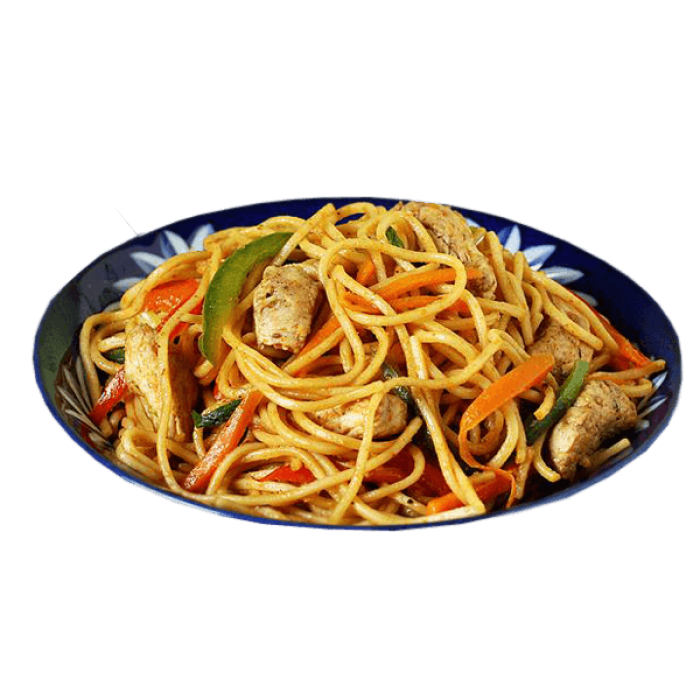

Noodles is a simple and easy food you can prepare. It is inexpensive and you can add your own style to it. It doesn't take so much time to prepare
A plate of noodles
You need to have your noodles with sauce to give it extra flavour and make it very healthy. You can make it anyway you like. You can add Peppers, carrots and meats as shown in the picture.
To get your noodles ready, First of all boil some water.
Put on Your gas cooker and start opening your noodle packs and putting the noodles in Your cooking pot.
Next, Pour the water into the pot. This is for you to cook the noodles.
Just sprinkle salt on the noodles.
Close the pot and then leave it for a few minutes to cook and after that, mix the noodles.
Next, You have to sieve the noodles to remove all of that water.
After that, get your sauce and put it in a fry pan or another pot, Turn on the gas cooker and then stir to mix the noodles with your sauce. After that, Turn off the gas cooker AND ENJOY YOUR NOODLES!
You can add some of the seasonings that come with your noodle pack to the noodles, Multitask to get things done quicker.